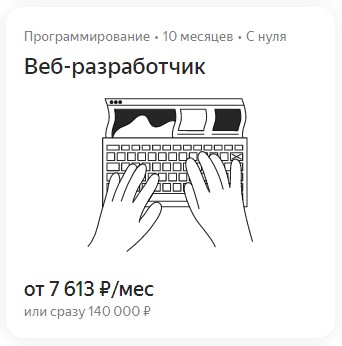

День четвёртый, Вводный курс веб-разработки Яндекс Практикума
Я начал прохождение вводного курса веб-разработки в Яндекс практикуме. Мне понравился интерфейс заданий, подача материала, шутливая форма, пошаговые практические задания. На данный момент лучшего формата мне не встречалось.
На Яндекс Практикуме обучение устроено так, что основную часть курса можно оплатить и пройти только после вводного курса. Наверное это сделано, чтобы отсеивать нецелустремлённых или слабоподготовленных учеников.